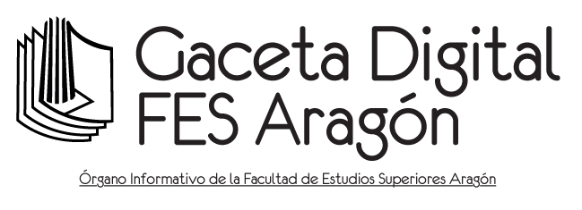

“La capacitación en el ámbito laboral es un derecho al cual ustedes tienen acceso. Asimismo, es importante que estén enterados acerca de temas útiles en el desarrollo personal y familiar, principalmente en la cultura de la protección civil para brindar ayuda cuando se requiera”, expresó el Lic. José Francisco Salgado Rico, secretario administrativo, en nombre del M. en I. Fernando Macedo Chagolla, director de nuestra Facultad, durante el Programa de Pláticas para el Personal Administrativo.
Como parte del evento, el 21 de junio se celebró la charla Alimentación saludable, a cargo del enfermero y miembro de la Coordinación de Servicios a la Comunidad, Andrés Aguilar Acosta. En un inicio, describió el proceso de alimentación y absorción de glucosa en el organismo.
Posteriormente, procedió a derribar algunos mitos referentes a la correcta ingesta de nutrientes: carbohidratos, proteínas, grasas, agua, minerales y vitaminas. Asimismo, destacó la importancia de medir las porciones de la comida y no exceder la cantidad recomendada de azúcar añadida (30 gramos al día) para llevar un estilo de vida más sano.
Por otro lado, el día 23, la Psic. Brenda Paola Méndez Romero abordó la temática del control del estrés y manejo de emociones. Durante su participación mencionó las reacciones fisiológicas experimentadas y recomendó técnicas de respiración, así como estrategias para responder de forma eficaz y prevenir enfermedades.
De igual manera, explicó los pasos para el autocontrol: reconocer los detonadores, tomar conciencia de los cambios corporales, mantener la mente tranquila y abordar las diversas situaciones de forma positiva, con confianza en uno mismo.
Finalmente, a través de la Comisión Local de Seguridad, el día 26 se ofreció el Curso de primeros auxilios por el técnico en urgencias médicas Enrique Meza Gutiérrez, de la Dirección General de Prevención y Protección Civil de la UNAM.
Durante la sesión, habló del peligro existente al acercarse a ver un accidente, pues en ocasiones se arriesga la vida. Según dijo el ponente, “por cada persona muerta a causa del percance, hay una persona más que fallece porque no se verifica el área segura”.
Por otra parte, mostró maniobras de emergencia, como la de Reanimación Cerebro-Cardiopulmonar (RCCP); Heimlich, para la Obstrucción de Vías Aéreas, y algunas para la movilización de heridos.
A su vez, destacó la importancia del cuidado inmediato adecuado y provisional, prestado a las personas antes de ser atendidos por profesionales de la salud, cuyos objetivos son conservar la vida, evitar daños posteriores y asegurar el traslado de los accidentados a un centro hospitalario.